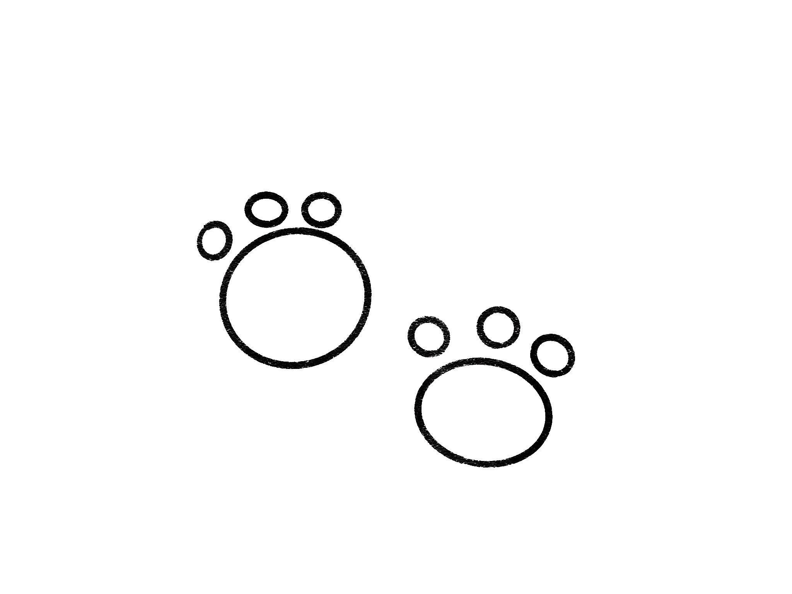

With the bread and milk in my hands I place it in my bike basket. I put my hands onto the bike and started pedaling throughout the neighborhood. I reach the last house around the corner near the woods and notice a fluffy black ball on the ground. Out of curiosity I biked up to it, it was a fur ball. It looked exactly like the fur of the cat in the newspaper. Followed up with the fur ball was a trail of paw prints. As a grin spread across my face I pedal in the direction of the woods.
